Table of Contents for
CompTIA Security+ All-in-One Exam Guide, Sixth Edition (Exam SY0-601)), 6th Edition
- Cover (01:09 mins)
- Title Page (01:09 mins)
- Copyright Page (03:27 mins)
- Dedication (01:09 mins)
- About the Authors (04:36 mins)
- Contents (19:33 mins)
- Preface (02:18 mins)
- Acknowledgments (01:09 mins)
- Introduction (12:39 mins)
-
Part I Threats, Attacks, and Vulnerabilities (01:09 mins)
- Chapter 1 Social Engineering Techniques (35:39 mins)
- Chapter 2 Type of Attack Indicators (37:57 mins)
- Chapter 3 Application Attack Indicators (33:21 mins)
- Chapter 4 Network Attack Indicators (39:06 mins)
- Chapter 5 Threat Actors, Vectors, and Intelligence Sources (44:51 mins)
- Chapter 6 Vulnerabilities (31:03 mins)
- Chapter 7 Security Assessments (23:00 mins)
- Chapter 8 Penetration Testing (25:18 mins)
-
Part II Architecture and Design (01:09 mins)
- Chapter 9 Enterprise Security Architecture (26:27 mins)
- Chapter 10 Virtualization and Cloud Security (25:18 mins)
- Chapter 11 Secure Application Development, Deployment, and Automation Concepts (27:36 mins)
- Chapter 12 Authentication and Authorization (33:21 mins)
- Chapter 13 Cybersecurity Resilience (39:06 mins)
- Chapter 14 Embedded and Specialized Systems (41:24 mins)
- Chapter 15 Physical Security Controls (49:27 mins)
- Chapter 16 Cryptographic Concepts (42:33 mins)
-
Part III Implementation (01:09 mins)
- Chapter 17 Secure Protocols (20:42 mins)
- Chapter 18 Host and Application Security (46:00 mins)
- Chapter 19 Secure Network Design (67:51 mins)
- Chapter 20 Wireless Security (25:18 mins)
- Chapter 21 Secure Mobile Solutions (43:42 mins)
- Chapter 22 Implementing Cloud Security (24:09 mins)
- Chapter 23 Identity and Account Management Controls (33:21 mins)
- Chapter 24 Implement Authentication and Authorization (37:57 mins)
- Chapter 25 Public Key Infrastructure (55:12 mins)
- Part IV Operations and Incident Response (01:09 mins)
- Part V Governance, Risk, and Compliance (01:09 mins)
- Part VI Appendixes and Glossary (01:09 mins)
- Glossary (65:33 mins)
- Index (67:51 mins)
CHAPTER 25
Public Key Infrastructure
In this chapter, you will
• Learn about the different components of a PKI system
• Learn about the concepts to employ a PKI system
• Understand how certificates are used as part of a security solution
• Implement public key infrastructure components
A public key infrastructure (PKI) provides all the components necessary for different types of users and entities to be able to communicate securely and in a predictable manner. A PKI is made up of hardware, applications, policies, services, programming interfaces, cryptographic algorithms, protocols, users, and utilities. These components work together to allow communication to manage asymmetric keys facilitating the use of public key cryptography for digital signatures, data encryption, and integrity. Although many different applications and protocols can provide the same type of functionality, constructing and implementing a PKI boils down to establishing a level of trust.
Certification Objective This chapter covers CompTIA Security+ exam objective 3.9: Given a scenario, implement public key infrastructure.
This objective is a good candidate for performance-based questions, which means you should expect questions in which you must apply your knowledge of the topic to a scenario. The best answer to a question will depend on specific details in the scenario preceding the question, not just the question. The questions may also involve tasks other than just picking the best answer from a list. Instead, you may be instructed to order items on a diagram, put options in rank order, match two columns of items, or perform a similar task.
Public Key Infrastructure (PKI)
A PKI is composed of several components, all working together to handle the distribution and management of keys in a public key cryptosystem. Keys are carried via a digital structure known as a certificate. Other components, such as certificate authorities and registration authorities, exist to manage certificates. Working together, these components enable seamless use of public key cryptography between systems.
If, for example, John and Diane want to communicate securely, John can generate his own public/private key pair and send his public key to Diane, or he can place his public key in a directory (folder) that is available to everyone. If Diane receives John’s public key, either from him or from a public directory, how does she know it really came from John? Maybe another individual is masquerading as John and has replaced John’s public key with her own, as shown in Figure 25-1. If this took place, Diane would believe that her messages could be read only by John and that the replies were actually from him. However, she would actually be communicating with Katie. What is needed is a way to verify an individual’s identity, to ensure that a person’s public key is bound to their identity and thus ensure that the previous scenario (and others) cannot take place.
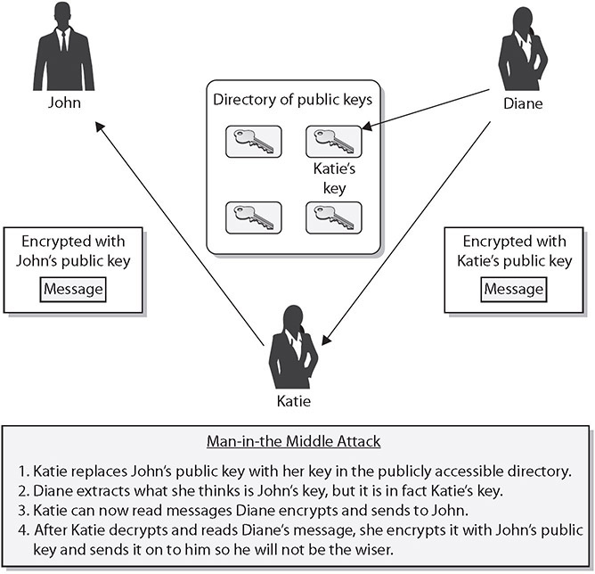
Figure 25-1 Without PKIs, individuals could spoof others’ identities, a manin-the-middle attack.
In PKI environments, entities called registration authorities (RAs) and certificate authorities (CAs) provide services similar to those of the Department of Motor Vehicles (DMV). When John goes to register for a driver’s license, he has to prove his identity to the DMV by providing his passport, birth certificate, or other identifying documentation. If the DMV is satisfied with the proof John provides (and John passes a driving test), the DMV will create a driver’s license that can then be used by John to prove his identity. Whenever John needs to identify himself, he can show his driver’s license. Although many people may not trust John to identify himself truthfully, they do trust the third party, the DMV.
In the PKI context, while some variations exist in specific products, the RA will require proof of identity from the individual requesting a certificate and will validate this information. The RA will then advise the CA to generate a certificate, which is analogous to a driver’s license. The CA will digitally sign the certificate using its private key. The use of the private key assures the recipient that the certificate came from the CA. When Diane receives John’s certificate and verifies that it was actually digitally signed by a CA that she trusts, she will believe that the certificate is actually John’s—not because she trusts John, but because she trusts the entity that is vouching for his identity (the CA).

EXAM TIP A registration authority (RA) verifies digital certificate requests and forwards them to a certificate authority (CA). The CA is a trusted organization that validates and issues digital certificates.
This is commonly referred to as a third-party trust model. Public keys are components of digital certificates, so when Diane verifies the CA’s digital signature, this verifies that the certificate is truly John’s and that the public key the certificate contains is also John’s. This is how John’s identity is bound to his public key.
This process allows John to authenticate himself to Diane and others. Using the third-party certificate, John can communicate with her, using public key encryption, without prior communication or a preexisting relationship. Once Diane is convinced of the legitimacy of John’s public key, she can use it to encrypt and decrypt messages between herself and John, as illustrated in Figure 25-2.
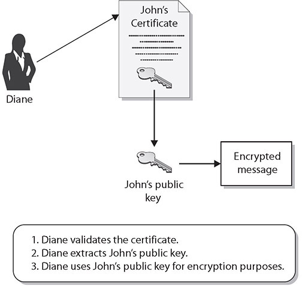
Figure 25-2 Public keys are components of digital certificates.
Numerous applications and protocols can generate public/private key pairs and provide functionality similar to what a PKI provides, but no trusted third party is available for both of the communicating parties. For each party to choose to communicate this way without a third party vouching for the other’s identity, the two must choose to trust each other and the communication channel they are using. In many situations, it is impractical and dangerous to arbitrarily trust an individual you do not know, and this is when the components of a PKI must fall into place—to provide the necessary level of trust you cannot provide, or choose not to provide, on your own.
What does the “infrastructure” in “public key infrastructure” really mean? An infrastructure provides a sustaining groundwork upon which other things can be built. So an infrastructure works at a low level to provide a predictable and uniform environment that allows other, higher-level technologies to work together through uniform access points. The environment that the infrastructure provides allows these higher-level applications to communicate with each other and gives them the underlying tools to carry out their tasks.
EXAM TIP Make sure you understand the role of PKI in managing certificates and trust associated with public keys.
Key Management
The whole purpose for PKI is to provide the structure and components necessary for an organization to manage cryptographic keys that need to be shared between entities. A digital key is just a digital number, simply data. Metadata elements about the keys—who made them, what they are used for, how long they are valid, and a host of other questions—need to be stored with the key. Hence, the invention of a certificate, which is a simple text file that contains vital information about a key. In addition to this metadata, other important elements surrounding key management include policies on key protection, storage, key escrow, and key recovery. Cryptographic keys are important and critical to the functioning cryptographic solutions in an enterprise. Some keys need to be shared to be effective; others need to be kept private. Key management is the set of activities that an organization must undertake to ensure that keys enable proper cryptography and do not cause security issues.

NOTE The security associated with the use of public key cryptography revolves around the security of the private key. Nonrepudiation depends on the principle that the private key is only accessible to the holder of the key. If another person has access to the private key, they can impersonate the proper key holder.
Certificate Authority (CA)
As previously described, the certificate authority (CA) is the trusted authority that certifies individuals’ identities and creates electronic documents indicating that individuals are who they say they are. The electronic document is referred to as a digital certificate, and it establishes an association between the subject’s identity and a public key. The private key that is paired with the public key in the certificate is stored separately.
The CA is more than just a piece of software, however; it is actually made up of the software, hardware, procedures, policies, and people involved in validating individuals’ identities and generating the certificates. This means that if one of these components is compromised, it can negatively affect the CA overall and can threaten the integrity of the certificates it produces.
Every CA should have a certification practices statement (CPS) that outlines how identities are verified; the steps the CA follows to generate, maintain, and transmit certificates; and why the CA can be trusted to fulfill its responsibilities. It describes how keys are secured, what data is placed within a digital certificate, and how revocations will be handled. If a company is going to use and depend on a public CA, the company’s security officers, administrators, and legal department should review the CA’s entire CPS to ensure that it will properly meet the company’s needs, and to make sure that the level of security claimed by the CA is high enough for their use and environment. A critical aspect of a PKI is the trust between the users and the CA, so the CPS should be reviewed and understood to ensure that this level of trust is warranted.
The certificate server is the actual service that issues certificates based on the data provided during the initial registration process. The server constructs and populates the digital certificate with the necessary information and combines the user’s public key with the resulting certificate. The certificate is then digitally signed with the CA’s private key.
Intermediate CA
Intermediate CAs function to transfer trust between different CAs. These CAs are also referred to as subordinate CAs because they are subordinate to the CA that they reference. The path of trust is walked up from the subordinate CA to the higher-level CA; in essence, the subordinate CA is using the higher-level CA as a reference.
Registration Authority (RA)
A registration authority (RA) is the PKI component that accepts a request for a digital certificate and performs the necessary steps of registering and authenticating the person requesting the certificate. The authentication requirements differ depending on the type of certificate being requested. Most CAs offer a series of classes of certificates with increasing trust by class.
Each higher class of certificate can carry out more powerful and critical tasks than the one below it. This is why the different classes have different requirements for proof of identity. If you want to receive a Class 1 certificate, you may only be asked to provide your name, e-mail address, and physical address. For a Class 2 certificate, you may need to provide the RA with more data, such as your driver’s license, passport, and company information that can be verified. To obtain a Class 3 certificate, you will be asked to provide even more information and most likely will need to go to the RA’s office for a face-to-face meeting. Each CA will outline the certification classes it provides and the identification requirements that must be met to acquire each type of certificate.
Certificate Revocation List (CRL)
The CA provides protection against bad certificates by maintaining a certificate revocation list (CRL), a list of serial numbers of certificates that have been revoked. The CRL also contains a statement indicating why the individual certificates were revoked and a date when the revocation took place. The list usually contains all certificates that have been revoked within the lifetime of the CA. Certificates that have expired are not the same as those that have been revoked. If a certificate has expired, it means that its end validity date was reached.
The CA is the entity responsible for the status of the certificates it generates; it needs to be told of a revocation, and it must provide this information to others. The CA is responsible for maintaining the CRL and posting it in a publicly available directory.
EXAM TIP The certificate revocation list is an essential item to ensure a certificate is still valid. CAs post CRLs in publicly available directories to permit automated checking of certificates against the list before certificate use by a client. A user should never trust a certificate that has not been checked against the appropriate CRL.
What if Stacy wants to get revenge against Joe for something, and she attempts to revoke Joe’s certificate herself? If she is successful, Joe’s participation in the PKI can be negatively affected because others will not trust his public key. Although we might think Joe deserves this, we need to have some system in place to make sure people cannot arbitrarily have others’ certificates revoked, whether for revenge or for malicious purposes.
When a revocation request is submitted, the individual submitting the request must be authenticated. Otherwise, this could permit a type of denial-of-service attack, in which someone has another person’s certificate revoked. The authentication can involve an agreed-upon password that was created during the registration process, but authentication should not be based on the individual proving that he has the corresponding private key, because it may have been stolen, and the CA would be authenticating an imposter.
The CRL’s integrity needs to be protected to ensure that attackers cannot modify data pertaining to a revoked certification from the list. If this were allowed to take place, anyone who stole a private key could just delete that key from the CRL and continue to use the private key fraudulently. The integrity of the list also needs to be protected to ensure that bogus data is not added to it. Otherwise, anyone could add another person’s certificate to the list and effectively revoke that person’s certificate. The only entity that should be able to modify any information on the CRL is the CA.
The mechanism used to protect the integrity of a CRL is a digital signature. The CA’s revocation service creates a digital signature for the CRL. To validate a certificate, the user accesses the directory where the CRL is posted, downloads the list, and verifies the CA’s digital signature to ensure that the proper authority signed the list and to ensure that the list was not modified in an unauthorized manner. The user then looks through the list to determine whether the serial number of the certificate that he is trying to validate is listed. If the serial number is on the list, the private key should no longer be trusted, and the public key should no longer be used.
One concern is how up to date the CRL is—how often is it updated and does it actually reflect all the certificates currently revoked? The actual frequency with which the list is updated depends on the CA and its CPS. It is important that the list is updated in a timely manner so that anyone using the list has the most current information. CRL files can be requested by individuals who need to verify and validate a newly received certificate, or the files can be periodically pushed down (sent) to all users participating within a specific PKI. This means the CRL can be pulled (downloaded) by individual users when needed or pushed down to all users within the PKI on a timed interval.
The actual CRL file can grow substantially, and transmitting this file and requiring PKI client software on each workstation to save and maintain it can use a lot of resources; therefore, the smaller the CRL the better. It is also possible to first push down the full CRL, and after that initial load, the following CRLs pushed down to the users are delta CRLs, meaning that they contain only the changes to the original or base CRL. This can greatly reduce the amount of bandwidth consumed when updating CRLs.
In implementations where the CRLs are not pushed down to individual systems, the users’ PKI software needs to know where to look for the posted CRL that relates to the certificate it is trying to validate. The certificate might have an extension that points the validating user to the necessary CRL distribution point. The network administrator sets up the distribution points, and one or more points can exist for a particular PKI. The distribution point holds one or more lists containing the serial numbers of revoked certificates, and the user’s PKI software scans the list(s) for the serial number of the certificate the user is attempting to validate. If the serial number is not present, the user is assured that it has not been revoked. This approach helps point users to the right resource and also reduces the amount of information that needs to be scanned when checking that a certificate has not been revoked.
One last option for checking distributed CRLs is an online service. When a client user needs to validate a certificate and ensure that it has not been revoked, he can communicate with an online service that will query the necessary CRLs available within the environment. This service can query the lists for the client instead of pushing down the full CRL to each and every system. So if Alice receives a certificate from Bob, she can contact an online service and send it the serial number listed in the certificate Bob sent. The online service would query the necessary CRLs and respond to Alice by indicating whether or not that serial number was listed as being revoked.
Certificate Attributes
A digital certificate binds an individual’s identity to a public key, and it contains all the information a receiver needs to be assured of the identity of the public key owner. The certificates are created and formatted based on the X.509 standard, which outlines the necessary fields of a certificate and the possible values that can be inserted into the fields. The latest version of X.509 is v3, and the fields it contains are described in the Table 25-1.
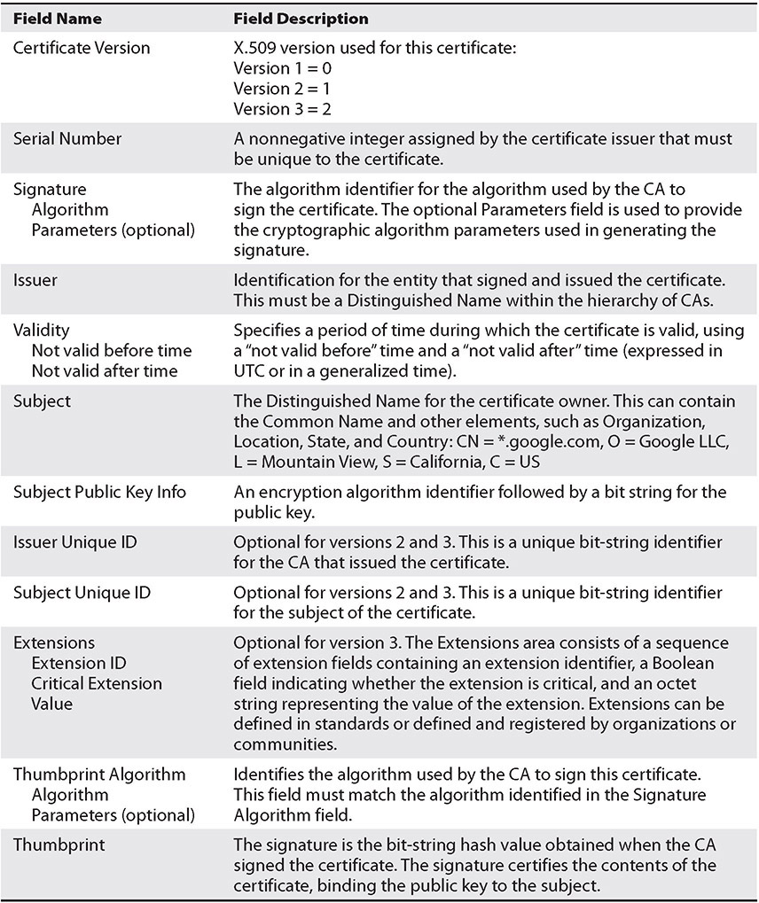
Table 25-1 X.509 Certificate Fields
Figure 25-3 shows the actual values of the different certificate fields for a particular certificate. The version of this certificate is v3 (X.509 v3) and the serial number is also listed—this number is unique for each certificate that is created by a specific CA. The CA used the SHA-1 hashing algorithm to create the message digest value and then signed it using the CA’s private key using the RSA algorithm.
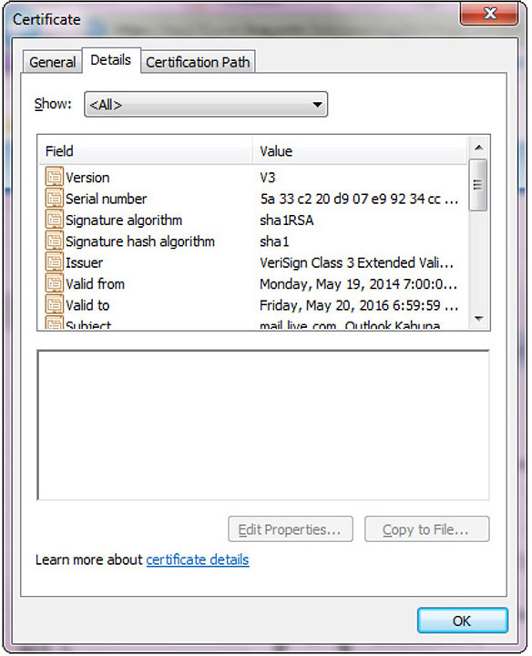
Figure 25-3 Fields within a digital certificate
Online Certificate Status Protocol (OCSP)
One of the protocols used for online revocation services is the Online Certificate Status Protocol (OCSP), a request and response protocol that obtains the serial number of the certificate that is being validated and reviews CRLs for the client. The protocol has a responder service that reports the status of the certificate back to the client, indicating whether it has been revoked, it is valid, or its status is unknown. This protocol and service save the client from having to find, download, and process the right lists.
EXAM TIP Certificate revocation checks are done either by examining the CRL or using OCSP to see if a certificate has been revoked.
Certificate Signing Request (CSR)
A certificate signing request (CSR) is the actual request to a CA containing a public key and the requisite information needed to generate a certificate. The CSR contains all the identifying information that is to be bound to the key by the certificate-generation process.
CN
The Common Name (CN) field is represented in the Subject field of the certificate and is the fully qualified domain name (FQDN) for which the certificate is valid. A common representation in the subject line of a certificate may contain the Common Name and other elements, such as Organization, Location, State, and Country: CN = *.google.com, O = Google LLC, L = Mountain View, S = California, C = US. The O is organization, L is location, S is state, and C is country.
Distinguished Name (DN) is a term that describes the identifying information in a certificate and is part of the certificate itself. A certificate contains DN information for both the owner or requestor of the certificate (called the Subject DN) and the CA that issues the certificate (called the Issuer DN).
Subject Alternative Name (SAN)
Subject Alternative Name (SAN) is a field (extension) in a certificate that has several uses. In certificates for machines, it can represent the FQDN of the machine. For users, it can be the user principal name (UPN) or, in the case of an SSL certificate, it can indicate multiple domains across which the certificate is valid. Figure 25-4 shows the multiple domains covered by the certificate in the box below the field details. SAN is an extension that is used to a significant degree, as it has become a standard method used in a variety of circumstances.
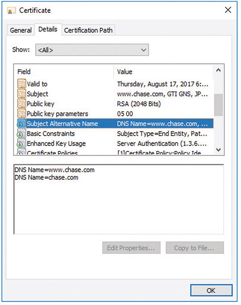
Figure 25-4 Subject Alternative Name
NOTE SAN certificates allow you to secure a primary domain and then add additional domains to the Subject Alternative Name field of the certificate. For example, you can secure all these domains with a single SAN certificate:
• www.example.com
• email.example.com
• intranet.example.com
• www.example.net
More information on Subject Alternative Names and certificates will be presented in a later section.
Expiration
A certificate itself has a lifetime that can be different from the key pair’s lifetime. The certificate’s lifetime is specified by the validity dates inserted into the digital certificate. These are beginning and ending dates indicating the time period during which the certificate is valid. The certificate cannot be used before the start date, and once the end date is met, the certificate is expired and a new certificate will need to be issued. Examining Figure 25-3 from earlier in the chapter, what can you say about the status of this certificate?
Types of Certificates
Four main types of certificates are used:
• End-entity certificates
• CA certificates
• Cross-certification certificates
• Policy certificates
End-entity certificates are issued by a CA to a specific subject, such as Joyce, the Accounting department, or a firewall, as illustrated in Figure 25-5. An end-entity certificate is the identity document provided by PKI implementations.
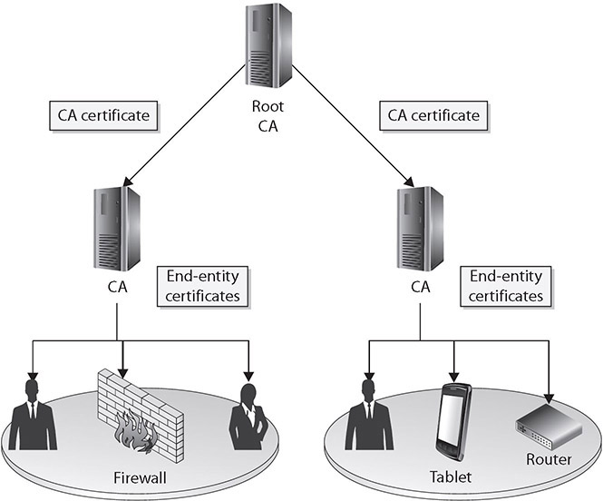
Figure 25-5 End-entity and CA certificates
A CA certificate can be self-signed, in the case of a stand-alone or root CA, or it can be issued by a superior CA within a hierarchical model. In the model in Figure 25-5, the superior CA gives the authority and allows the subordinate CA to accept certificate requests and generate the individual certificates itself. This may be necessary when a company needs to have multiple internal CAs, and different departments within an organization need to have their own CAs servicing their specific end-entities (users, network devices, and applications) in their sections. In these situations, a representative from each department requiring a CA registers with the more highly trusted CA and requests a CA certificate.
Cross-certification certificates, or cross-certificates, are used when independent CAs establish peer-to-peer trust relationships. Simply put, they are a mechanism through which one CA can issue a certificate allowing its users to trust another CA.
Within sophisticated CAs used for high-security applications, a mechanism is required to provide centrally controlled policy information to PKI clients. This is often done by placing the policy information in a policy certificate.
Wildcard Certificates
Certificates can be issued to an entity such as example.com. But what if there are multiple entities under example.com that need certificates? There are two choices: issue distinct certificates for each specific address or use wildcard certificates. Wildcard certificates work exactly as one would expect. A certificate issued for *.example.com would be valid for one.example.com as well as two.example.com.
EXAM TIP Wildcard certificates include an asterisk and period before the domain name. SSL certificates commonly extend encryption to subdomains through the use of wildcards.
Subject Alternative NameSAN
As mentioned earlier in the chapter, Subject Alternative Name (SAN) is a field (extension) in a certificate that has several uses. In certificates for machines, it can represent the fully qualified domain name (FQDN) of the machine; for users, it can be the user principal name (UPN). In the case of an SSL certificate, it can indicate multiple domains across which the certificate is valid. Figure 25-6 shows the two domains covered by the certificate in the box below the Field details. SAN is an extension that is used to a significant degree because it has become a standard method used in a variety of circumstances.
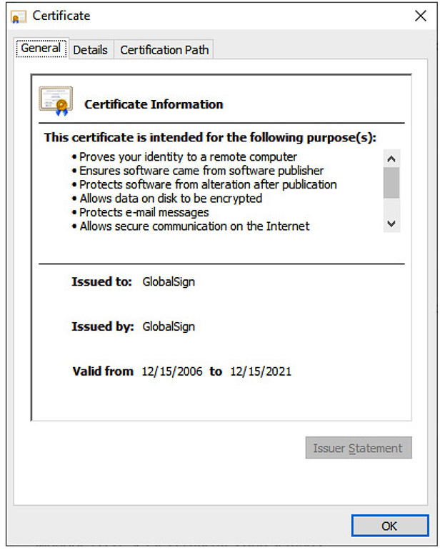
Figure 25-6 Code Signing Certificate
Code-Signing Certificates
Certificates can be designated for specific purposes, such as code signing. This is to enable the flexibility of managing certificates for specific functions and to reduce the risk in the event of compromise. Code-signing certificates are designated as such in the certificate itself, and the application that uses the certificate adheres to this policy restriction to ensure proper certificate usage.
Self-Signed Certificates
Certificates are signed by a higher-level CA, providing a root of trust. As with all chains, there is a final node of trust: the root node. Not all certificates have to have the same root node. A company can create its own certificate chain for use inside the company, and thus it creates its own root node. This company-created “root certificate” is an example of a CA certificate, mentioned earlier, and must be self-signed, as there is no other “higher” node of trust. What prevents one from signing their own certificates? The trust chain would begin and end with the certificate, and the user would be presented with the dilemma of whether or not to trust the certificate because, in the end, all a certificate does is detail a chain of trust to some entity that an end user trusts. Self-signing is shown for the root certificate in Figure 25-7 (the upper-left certificate).
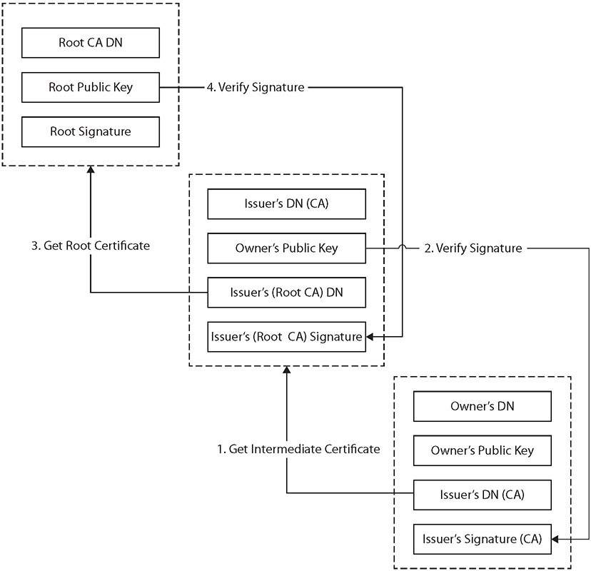
Figure 25-7 Certificate chaining
Machine/Computer
Certificates bind identities to keys and provide a means of authentication, which at times is needed for computers. Active Directory Domain Services (AD DS) can keep track of machines in a system via machines identifying themselves using machine certificates, also known as computer certificates. When a user logs in, the system can use either the machine certificate, identifying the machine, or the user certificate, identifying the user—whichever is appropriate for the desired operation. This is an example of an end-entity certificate.
Digital certificates can be used with e-mail systems for items such as digital signatures associated with e-mails. Just as other specialized functions such as code signing have their own certificates, it is common for a separate e-mail certificate to be used for identity associated with e-mail. This is an example of an end-entity certificate.
User
User certificates are just that—certificates that identify a user. They are an example of an end-entity certificate.
NOTE User certificates are employed by users for encrypted file systems (EFS), e-mail, and client authentications, whereas computer certificates help computers to authenticate to the network.
Root
A root certificate is a certificate that forms the initial basis of trust in a trust chain. All certificates are signed by the CA that issues them, and CAs can be chained together in a trust structure. Following the chain, one climbs the tree of trust until they find a self-signed certificate, indicating it is a root certificate. What determines whether or not a system trusts a root certificate is whether or not the root certificate is in the system’s store of trusted certificates. Different vendors, such as Microsoft and Apple, have trusted root certificate programs that determine by corporate policy which CAs they will label as trusted. Root certificates, because they form anchors of trust for other certificates, are examples of CA certificates, as explained earlier.
Domain Validation
Domain validation is a low-trust means of validation based on an applicant demonstrating control over a DNS domain. Domain validation is typically used for TLS and has the advantage that it can be automated via checks against a DNS record. A domain validation–based certificate, which is typically free, offers very little in assurance that the identity has not been spoofed because the applicant doesn’t need to directly interact with the issuer. Domain validation scales well and can be automated with little to no real interaction between an applicant and the CA, but in return it offers little assurance. Domain validation is indicated differently in different browsers, primarily to separate it from extended validation certificates, described next.
Extended Validation
Extended validation (EV) certificates are used for HTTPS websites and software to provide a high level of assurance as to the originator’s identity. EV certificates use the same methods of encryption to protect certificate integrity as do domain- and organization-validated certificates. The difference in assurance comes from the processes used by a CA to validate an entity’s legal identity before issuance. Because of the additional information used during the validation, EV certificates display the legal identity and other legal information as part of the certificate. EV certificates support multiple domains, but do not support wildcards.
To assist users in identifying EV certificates and the enhanced trust, several additional visual clues are provided to users when EVs are employed. When implemented in a browser, the legal entity name is displayed, in addition to the URL and a lock symbol, and in most instances, the entire URL bar is green. All major browser vendors provide this support, and because the information is included in the certificate itself, this function is web server agnostic.
EXAM TIP Know the various types of certificates discussed in this section and what they are used for.
Certificate Formats
Digital certificates are defined in RFC 5280: Internet X.509 Public Key Infrastructure Certificate and Certificate Revocation List (CRL) Profile. This RFC describes the X.509 v3 digital certificate format in detail. There are numerous ways to encode the information in a certificate before instantiation as a file, and the different methods result in different file extensions. Common extensions include .der, .pem, .crt, .cer, .pfx, .p12, and .p7b. Although they all can contain certificate information, they are not all directly interchangeable. While in certain cases some data can be interchanged, the best practice is to identify how your certificate is encoded and then label it correctly.
KEY
A KEY file, denoted by the file extension .key, can be used both for public and private PKCS#8 keys. The keys may be encoded as binary DER or as ASCII PEM.
Distinguished Encoding Rules (DER)
Distinguished Encoding Rules (DER) is one of the Abstract Syntax Notation One (ASN.1) encoding rules that can be used to encode any data object into a binary file. With respect to certificates, the data associated with the certificate, a series of name-value pairs, needs to be converted to a consistent format for digital signing. DER offers a consistent mechanism for this task. A DER file (.der extension) contains binary data and can be used for a single certificate.
Privacy-Enhanced Mail (PEM)
Privacy-Enhanced Mail (PEM) is the most common format used by certificate authorities when issuing certificates. PEM comes from RFC 1422 and is a Base64-encoded ASCII file that begins with “-----BEGIN CERTIFICATE-----”, followed by the Base64 data, and ends with “-----END CERTIFICATE-----”. A PEM file supports multiple digital certificates, including a certificate chain. A PEM file can contain multiple entries, one after another, and can include both public and private keys. Most platforms, however, such as web servers, expect the certificates and private keys to be in separate files.
The PEM format for certificate data is used in multiple file types, including .pem, .cer, .crt, and .key files.
EXAM TIP If you need to transmit multiple certificates, or a certificate chain, use PEM for encoding. PEM encoding can carry multiple certificates, whereas DER can only carry a single certificate.
Personal Information Exchange (PFX)
A PKCS#12 file is a portable file format with a .pfx extension. It is a binary format for storing the server certificate, intermediate certificates, and the private key in one file. Personal Information Exchange (PFX) files are typically used on Windows machines to import and export certificates and private keys.
CER
The .cer file extension is used to denote an alternative form, from Microsoft, of CRT files. The .cer/.crt extension is used for certificates and may be encoded as binary DER or as ASCII PEM. The .cer and .crt extensions are nearly synonymous. The .cer extension is most commonly associated with Microsoft Windows systems, whereas .crt is associated with UNIX systems.
NOTE The only time .crt and .cer can safely be interchanged is when the encoding type can be identical (for example, PEM-encoded CRT is the same as PEM-encoded CER).
EXAM TIP The file extension .cer is an SSL certificate file format used by web servers to help verify the identity and security of the site in question.
P12
P12 is an alternative file extension for a PKCS#12 file format, a binary format for storing the server certificate, intermediate certificates, and the private key in one encrypted file. These files usually have an extensions such as .pfx or .p12. They are typically used on Windows machines to import and export certificates and private keys.
P7B
The PKCS#7 or P7B format is stored in Base64 ASCII format and has a file extension of .p7b or .p7c. A P7B file begins with “-----BEGIN PKCS7-----” and only contains certificates and chain certificates (intermediate CAs), not the private key. The most common platforms that support P7B files are Microsoft Windows and Java Tomcat.
Concepts
PKI systems are composed of the items discussed in the first section, as well as methods of using and employing those items to achieve the desired functionality. When you are employing a PKI-based solution, it is important to understand that the security of the solution is as dependent upon how the elements are employed as it is on how they are constructed. This section describes several important operational elements, such as pinning, stapling, and certificate chaining, and it examines the various trust models.
Online vs. Offline CA
Certification servers must be online to provide certification services, so why would anyone have an offline server? The primary reason is security. If a given certificate authority is used only for periodic functions—for example, signing of specific certificates that are rarely reissued or signed—then keeping the server offline except when needed provides a significant level of security to the signing process. Other CA requests, such as CRL and validation requests, can be moved to a validation authority approved by the CA.
Stapling
Stapling is the process of combining related items to reduce communication steps. An example is when someone requests a certificate, stapling sends both the certificate and OCSP responder information in the same request to avoid the additional fetches the client would have to perform during path validations.
EXAM TIP Certificate stapling is considered a more efficient way to handle certificate verification. It minimizes the burden on the CA.
Pinning
When a certificate is presented for a host, either identifying the host or providing a public key, this information can be saved in an act called pinning, which is the process of associating a host with a previously provided X.509 certificate or public key. This can be important for mobile applications that move between networks frequently and are much more likely to be associated with hostile networks where levels of trust are low and risks of malicious data are high. Pinning assists in security through the avoidance of the use of DNS and its inherent risks when on less-than-secure networks.
The process of reusing a certificate or public key is called key continuity. This provides protection from an attacker, assuming that the attacker was not in position to attack on the initial pinning. If an attacker is able to intercept and taint the initial contact, then the pinning will preserve the attack. You should pin any time you want to be relatively certain of the remote host’s identity, relying on your home network security, and you are likely to be operating at a later time in a hostile environment. If you choose to pin, you have two options: pin the certificate or pin the public key.
EXAM TIP Certificate pinning is the process of associating a host with its expected public key or X.509 certificate.
Trust Model
A trust model is a construct of systems, personnel, applications, protocols, technologies, and policies that work together to provide a certain level of protection. All of these components can work together seamlessly within the same trust domain because they are known to the other components within the domain and are trusted to some degree. Different trust domains are usually managed by different groups of administrators, have different security policies, and restrict outsiders from privileged access.
Most trust domains (whether individual companies or departments) are not usually islands cut off from the world—they need to communicate with other, less-trusted domains. The trick is to figure out how much two different domains should trust each other as well as how to implement and configure an infrastructure that would allow these two domains to communicate in a way that will not allow security compromises or breaches. This can be more difficult than it sounds.
One example of trust considered earlier in the chapter is the driver’s license issued by the DMV. Suppose, for example, that Bob is buying a lamp from Carol and he wants to pay by check. Since Carol does not know Bob, she does not know if she can trust him or have much faith in his check. But if Bob shows Carol his driver’s license, she can compare the name to what appears on the check, and she can choose to accept it. The trust anchor (the agreed-upon trusted third party) in this scenario is the DMV, since both Carol and Bob trust it more than they trust each other. Since Bob had to provide documentation to prove his identity to the DMV, that organization trusted him enough to generate a license, and Carol trusts the DMV, so she decides to trust Bob’s check.
Consider another example of a trust anchor. If Joe and Stacy need to communicate through e-mail and would like to use encryption and digital signatures, they will not trust each other’s certificate alone. But when each receives the other’s certificate and sees that they both have been digitally signed by an entity they both do trust—the CA—then they have a deeper level of trust in each other. The trust anchor here is the CA. This is easy enough, but when we need to establish trust anchors between different CAs and PKI environments, it gets a little more complicated.
When two companies need to communicate using their individual PKIs, or if two departments within the same company use different CAs, two separate trust domains are involved. The users and devices from these different trust domains will need to communicate with each other, and they will need to exchange certificates and public keys. This means that trust anchors need to be identified, and a communication channel must be constructed and maintained.
A trust relationship must be established between two issuing authorities (CAs). This happens when one or both of the CAs issue a certificate for the other CA’s public key, as shown in Figure 25-8. This means that each CA registers for a certificate and public key from the other CA. Each CA validates the other CA’s identification information and generates a certificate containing a public key for that CA to use. This establishes a trust path between the two entities that can then be used when users need to verify other users’ certificates that fall within the different trust domains. The trust path can be unidirectional or bidirectional, so either the two CAs trust each other (bidirectional) or only one trusts the other (unidirectional).
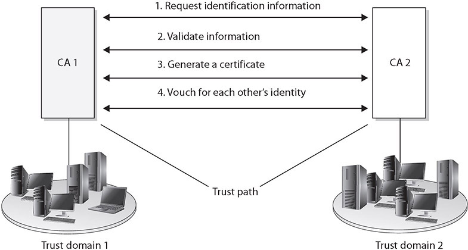
Figure 25-8 A trust relationship can be built between two trust domains to set up a communication channel.
As illustrated in Figure 25-8, all the users and devices in trust domain 1 trust their own certificate authority (CA 1), which is their trust anchor. All users and devices in trust domain 2 have their own trust anchor, CA 2. The two CAs have exchanged certificates and trust each other, but they do not have a common trust anchor between them.
The trust models describe and outline the trust relationships between the different CAs and different environments, which will indicate where the trust paths reside. The trust models and paths need to be thought out before implementation to restrict and control access properly and to ensure that as few trust paths as possible are used. Several different trust models can be used: the hierarchical, peer-to-peer, and hybrid models are discussed in the following sections.
Hierarchical Trust Model
The first type of trust model we’ll examine is a basic hierarchical structure that contains a root CA, an intermediate CA, leaf CAs, and end-entities. The configuration is that of an inverted tree, as shown in Figure 25-9. The root CA is the ultimate trust anchor for all other entities in this infrastructure, and it generates certificates for the intermediate CAs, which in turn generate certificates for the leaf CAs, and the leaf CAs generate certificates for the end-entities.
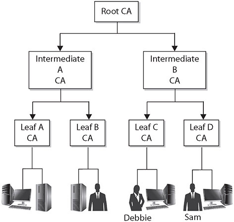
Figure 25-9 The hierarchical trust model outlines trust paths.
As introduced earlier in the chapter, intermediate CAs function to transfer trust between different CAs. These CAs are referred to as subordinate CAs, as they are subordinate to the CA that they reference. The path of trust is walked up from the subordinate CA to the higher-level CA; in essence, the subordinate CA is using the higher-level CA as a reference.
As shown in Figure 25-9, no bidirectional trusts exist—they are all unidirectional trusts, as indicated by the one-way arrows. Since no other entity can certify and generate certificates for the root CA, it creates a self-signed certificate. This means that the certificate’s issuer and subject fields hold the same information, both representing the root CA, and the root CA’s public key will be used to verify this certificate when that time comes. This root CA certificate and public key are distributed to all entities within this trust model.
Walking the Certificate Path When a user in one trust domain needs to communicate with another user in another trust domain, one user will need to validate the other’s certificate. This sounds simple enough, but what it really means is that each certificate for each CA, all the way up to a shared trusted anchor, also must be validated. If Debbie needs to validate Sam’s certificate, as shown in Figure 25-9, she actually also needs to validate the Leaf D CA and Intermediate B CA certificates, as well as Sam’s.
So in Figure 25-9, we have a user, Sam, who digitally signs a message and sends it and his certificate to Debbie. Debbie needs to validate this certificate before she can trust Sam’s digital signature. Included in Sam’s certificate is an issuer field, which indicates that the certificate was issued by Leaf D CA. Debbie has to obtain Leaf D CA’s digital certificate and public key to validate Sam’s certificate. Remember that Debbie validates the certificate by verifying its digital signature. The digital signature was created by the certificate issuer using its private key, so Debbie needs to verify the signature using the issuer’s public key.
Debbie tracks down Leaf D CA’s certificate and public key, but she now needs to verify this CA’s certificate, so she looks at the issuer field, which indicates that Leaf D CA’s certificate was issued by Intermediate B CA. Debbie now needs to get Intermediate B CA’s certificate and public key.
Debbie’s client software tracks this down and sees that the issuer for the Intermediate B CA is the root CA, for which she already has a certificate and public key. So Debbie’s client software had to follow the certificate path, meaning it had to continue to track down and collect certificates until it came upon a self-signed certificate. A self-signed certificate indicates that it was signed by a root CA, and Debbie’s software has been configured to trust this entity as her trust anchor, so she can stop there. Figure 25-10 illustrates the steps Debbie’s software had to carry out just to be able to verify Sam’s certificate.
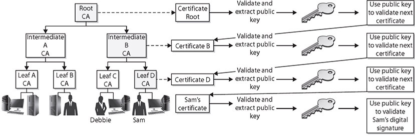
Figure 25-10 Verifying each certificate in a certificate path
This type of simplistic trust model works well within an enterprise that easily follows a hierarchical organizational chart, but many companies cannot use this type of trust model because different departments or offices require their own trust anchors. These demands can be derived from direct business needs or from inter-organizational politics. This hierarchical model might not be possible when two or more companies need to communicate with each other. Neither company will let the other’s CA be the root CA, because each does not necessarily trust the other entity to that degree. In these situations, the CAs will need to work in a peer-to-peer relationship instead of in a hierarchical relationship.
Peer-to-Peer Trust Model
In a peer-to-peer trust model, one CA is not subordinate to another CA, and no established trusted anchor between the CAs is involved. The end-entities will look to their issuing CA as their trusted anchor, but the different CAs will not have a common anchor.
Figure 25-11 illustrates this type of trust model. The two different CAs will certify the public key for each other, which creates a bidirectional trust. This is referred to as cross-certification since the CAs are not receiving their certificates and public keys from a superior CA, but instead are creating them for each other.
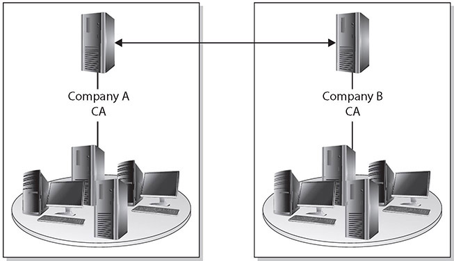
Figure 25-11 Crosscertification creates a peer-topeer PKI model.
One of the main drawbacks to this model is scalability. Each CA must certify every other CA that is participating, and a bidirectional trust path must be implemented, as shown in Figure 25-12. If one root CA were certifying all the intermediate CAs, scalability would not be as much of an issue. Figure 25-12 represents a fully connected mesh architecture, meaning that each CA is directly connected to and has a bidirectional trust relationship with every other CA. As you can see in this illustration, the complexity of this setup can become overwhelming.
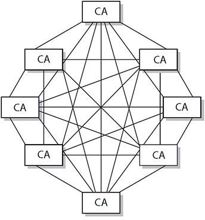
Figure 25-12 Scalability is a drawback in crosscertification models.
Hybrid Trust Model
A company can be complex within itself, and when the need arises to communicate properly with outside partners, suppliers, and customers in an authorized and secured manner, this complexity can make sticking to either the hierarchical or peer-to-peer trust model difficult, if not impossible. In many implementations, the different model types have to be combined to provide the necessary communication lines and levels of trust. In a hybrid trust model, the two companies have their own internal hierarchical models and are connected through a peer-to-peer model using cross-certification.
Another option in this hybrid configuration is to implement a bridge CA. Figure 25-13 illustrates the role that a bridge CA could play—it is responsible for issuing cross-certificates for all connected CAs and trust domains. The bridge CA is not considered a root or trust anchor, but merely the entity that generates and maintains the cross-certification for the connected environments.
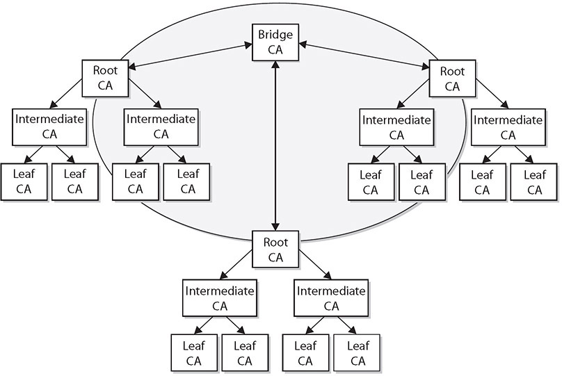
Figure 25-13 A bridge CA can control the cross-certification procedures.
EXAM TIP Three trust models exist: hierarchical, peer-to-peer, and hybrid. Hierarchical trust is like an upside-down tree. Peer-to-peer is a lateral series of references, and hybrid is a combination of hierarchical and peer-to-peer trust.
Key Escrow
The impressive growth of the use of encryption technology has led to new methods for handling keys. Key escrow is a system by which your private key is kept both by you and by a third party. Encryption is adept at hiding secrets, and with computer technology being affordable to everyone, criminals and other ill-willed people began using encryption to conceal communications and business dealings from law enforcement agencies. Because they could not break the encryption, government agencies began asking for key escrow. Key escrow in this circumstance is a system by which your private key is kept both by you and by the government. This allows people with a court order to retrieve your private key to gain access to anything encrypted with your public key. The data is essentially encrypted by your key and the government key, giving the government access to your plaintext data.
Key escrow is also used by corporate enterprises, as it provides a method of obtaining a key in the event that the key holder is not available. There are also key recovery mechanisms to do this, and the corporate policies will determine the appropriate manner in which to safeguard keys across the enterprise.
Key escrow that involves an outside agency can negatively impact the security provided by encryption, because the government requires a huge, complex infrastructure of systems to hold every escrowed key, and the security of those systems is less efficient than the security of you memorizing the key. However, there are two sides to the key escrow coin. Without a practical way to recover a key if or when it is lost or the key holder dies, for example, some important information will be lost forever. Such issues will affect the design and security of encryption technologies for the foreseeable future.
EXAM TIP Key escrow can solve many problems resulting from an inaccessible key, and the nature of cryptography makes the access of the data impossible without the key.
Certificate Chaining
Certificates are used to convey identity and public key pairs to users, but this raises the question: why trust the certificate? The answer lies in the certificate chain, a chain of trust from one certificate to another, based on signing by an issuer, until the chain ends with a certificate that the user trusts. This conveys the trust from the trusted certificate to the certificate that is being used. Examining Figure 25-7 from earlier in the chapter, we can look at the ordered list of certificates from the one presented to one that is trusted.
Certificates that sit between the presented certificate and the root certificate are called chain or intermediate certificates. The intermediate certificate is the signer/issuer of the presented certificate, indicating that it trusts the certificate. The root CA certificate is the signer/issuer of the intermediate certificate, indicating that it trusts the intermediate certificate. The chaining of certificates is a manner of passing trust down from a trusted root certificate. The chain terminates with a root CA certificate, which is always signed by the CA itself. The signatures of all certificates in the chain must be verified up to the root CA certificate.
Chapter Review
In this chapter, you became acquainted with the principles of public key infrastructure. The chapter opened with a description of the components of a PKI system, including certificate authority (CA), key management, intermediate CA, registration authority (RA), certificate revocation list (CRL), and certificate attributes. Next, the topics Online Certificate Status Protocol (OCSP), certificate signing request (CSR), CN, SAN, and expiration were covered. The discussion continued with types of certificates, including wildcard, SAN, code-signing, self-signed, machine/computer, e-mail, user, root, domain validation, and extended validation certificates. The chapter continued with certificate formats, such as Distinguished Encoding Rules (DER), Privacy-Enhanced Mail (PEM), Personal Information Exchange (PFX), CER, P12, and P7B. The chapter concluded with a discussion of PKI concepts, including online versus offline CA, stapling, pinning, trust models, key escrow, and certificate chaining.
Questions
To help you prepare further for the CompTIA Security+ exam, and to test your level of preparedness, answer the following questions and then check your answers against the correct answers at the end of the chapter.
1. You are asked by the senior system administrator to refresh the SSL certificates on the web servers. The process is to generate a certificate signing request (CSR), send it to a third party to be signed, and then apply the return information to the CSR. What is this an example of?
A. Pinning
B. Borrowed authority
C. Third-party trust model
D. Stapling
2. A certificate authority consists of which of the following?
A. Hardware and software
B. Policies and procedures
C. People who manage certificates
D. All of the above
3. Your manager wants you to review the company’s internal PKI system’s CPS for applicability and verification and to ensure that it meets current needs. What are you most likely to focus on?
A. Revocations
B. Trust level provided to users
C. Key entropy
D. How the keys are stored
4. You are preparing an e-mail to send to a colleague at work, and because the message information is sensitive, you decide you should encrypt it. When you attempt to apply the certificate that you have for the colleague, the encryption fails. The certificate was listed as still valid for another year, and the certificate authority is still trusted and working. What happened to this user’s key?
A. It was using the wrong algorithm.
B. You are querying the incorrect certificate authority.
C. It was revoked.
D. The third-party trust model failed.
5. Which of the following is a requirement for a CRL?
A. It must have the e-mail addresses of all the certificate owners.
B. It must contain a list of all expired certificates.
C. It must contain information about all the subdomains covered by the CA.
D. It must be posted to a public directory.
6. What does OCSP do?
A. It reviews the CRL for the client and provides a status about the certificate being validated.
B. It outlines the details of a certificate authority, including how identities are verified, the steps the CA follows to generate certificates, and why the CA can be trusted.
C. It provides for a set of values to be attached to the certificate.
D. It provides encryption for digital signatures.
7. The X.509 standard applies to which of the following?
A. SSL providers
B. Digital certificates
C. Certificate revocation lists
D. Public key infrastructure
8. You are browsing a website when your browser provides you with the following warning message: “There is a problem with this website’s security certificate.” When you examine the certificate, it indicates that the root CA is not trusted. What most likely happened to cause this error?
A. The certificate was revoked.
B. The certificate does not have enough bit length for the TLS protocol.
C. The server’s CSR was not signed by a trusted CA.
D. The certificate has expired.
9. You are issued a certificate from a CA, delivered by e-mail, but the file does not have an extension. The e-mail notes that the root CA, the intermediate CAs, and your certificate are all attached in the file. What format is your certificate likely in?
A. DER
B. CER
C. PEM
D. PFX
10. Why is pinning more important on mobile devices?
A. It uses elliptic curve cryptography.
B. It uses less power for pinned certificate requests.
C. It reduces network bandwidth usage by combining multiple CA requests into one.
D. It allows caching of a known good certificate when roaming to low-trust networks.
Answers
1. C. This is an example of the third-party trust model. Although you are generating the encryption keys on the local server, you are getting these keys signed by a third-party authority so that you can present the third party as the trusted agent for users to trust your keys.
2. D. A certificate authority (CA) is the hardware and software that manage the actual certificate bits, the policies and procedures that determine when certificates are properly issued, and the people who make and monitor the policies for compliance.
3. B. You are most likely to focus on the level of trust provided by the CA to users of the system, as providing trust is the primary purpose of the CA.
4. C. The certificate has likely been revoked, or removed from that user’s identity and no longer marked valid by the certificate authority.
5. D. Certificate revocation lists (CRLs) must be posted to a public directory so that all users of the system can query it.
6. A. Online Certificate Status Protocol (OCSP) is an online protocol that will look for a certificate’s serial number on CRLs and provide a status message about the certificate to the client.
7. B. The X.509 standard is used to define the properties of digital certificates.
8. C. In this case, the server’s certificate signing request (CSR) was not signed by a CA that is trusted by the endpoint computer, so no third-party trust can be established. This could be an indication of an attack, so the certificate should be manually verified before data is provided to the web server.
9. C. Because the certificate includes the entire certificate chain, it is most likely delivered to you in Privacy-Enhanced Mail (PEM) format.
10. D. Pinning is important on mobile devices because they are much more likely to be used on various networks, many of which have much lower trust than their home network.